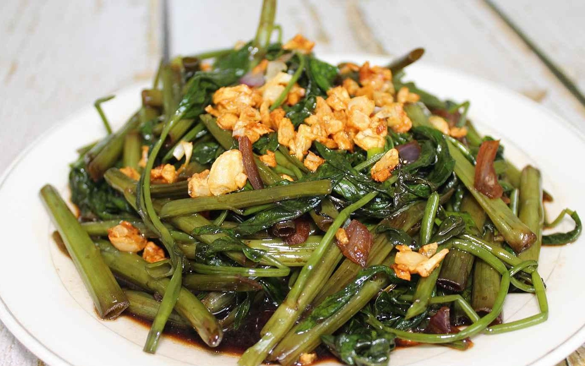
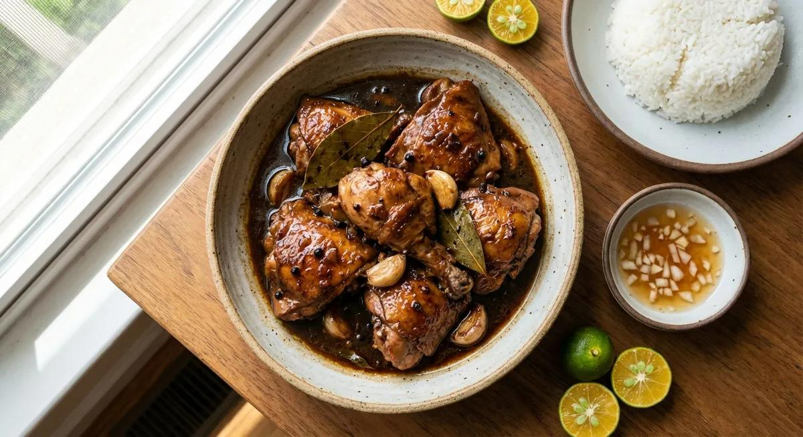
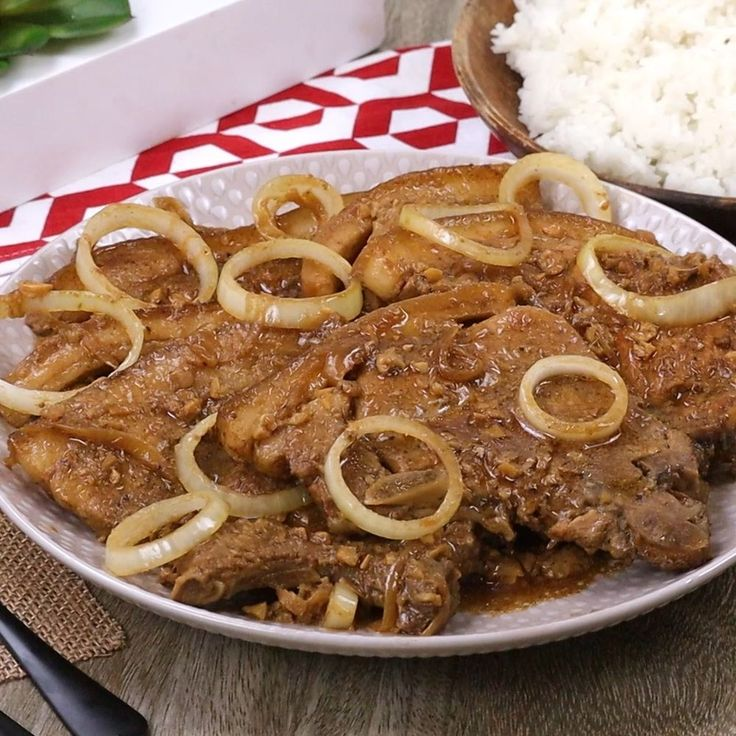

Tortang Talong
Sample estimate: ₱25–₱40 / serving
Find easy, affordable, and delicious recipes using simple ingredients.
Search by dish or ingredient, then filter by estimated budget and meal type.
Sample estimate: ₱25–₱40 / serving

Sample estimate: ₱25–₱40 / serving

Sample estimate: ₱20–₱35 / serving

Sample estimate: ₱20–₱35 / recipe
Sample estimate: ₱35–₱60 / recipe
Sample estimate: ₱35–₱60 / recipe

Sample estimate: ₱60–₱100 / recipe

Sample estimate: ₱70–₱110 / recipe
Sample estimate: ₱60–₱100 / recipe

Sample estimate: ₱70–₱120 / recipe
Sample estimate: ₱20–₱35 / recipe
Sample estimate: ₱25–₱45 / recipe
Sample estimate: ₱20–₱35 / recipe
Sample estimate: ₱25–₱45 / serving
Sample estimate: ₱40–₱65 / serving
Sample estimate: ₱35–₱55 / serving

Sample estimate: ₱25–₱45 / serving
No recipes found. Try a different name or category.